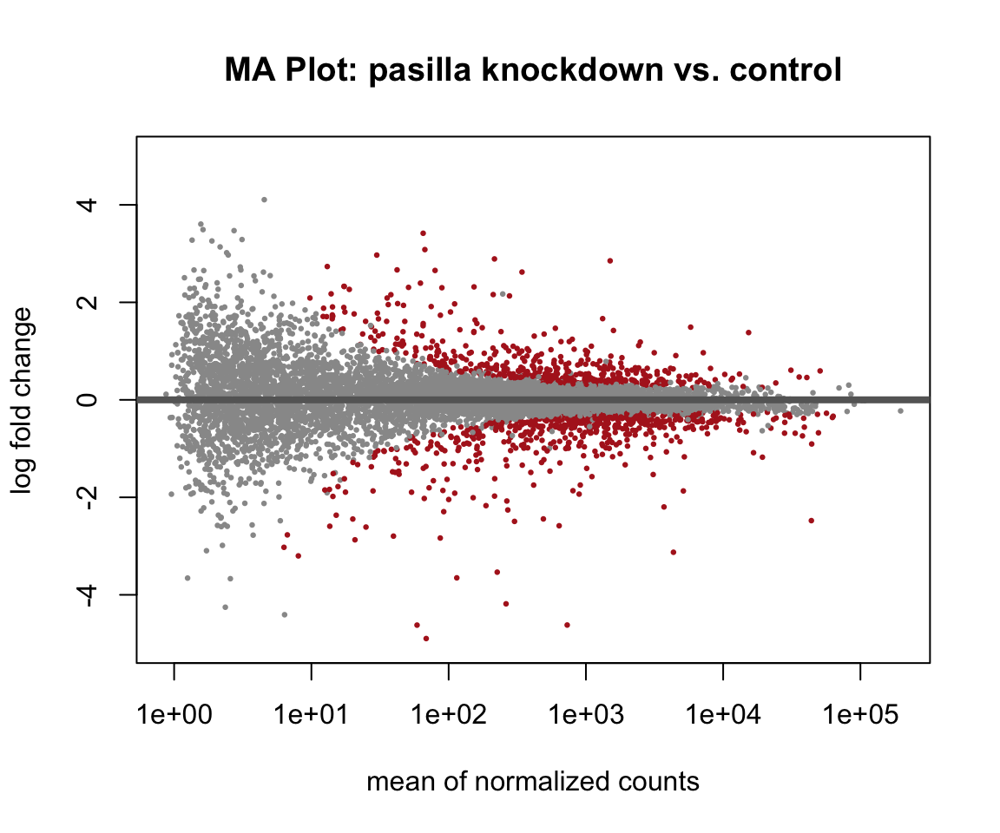

library(tidyverse)
library(this.path)
library(SummarizedExperiment)
library(DESeq2)
library(pasilla)
library(pheatmap)
setwd(this.dir())Day 12 (PM) Lab: Differential Expression Analysis
SC INBRE Biostatistics Summer Intensive 2026
1 Overview
This afternoon you will run a complete differential expression analysis on the pasilla dataset from Day 11’s PM lab. You already know what this dataset looks like. Today you go from the count matrix to a ranked list of differentially expressed genes.
How this lab works:
- Part 1 (instructor demo, ~20 min): We build the DESeq2 object together and run the model.
- Part 2 (on your own, ~90 min): Five exercises taking you through the full DE workflow.
The Quick Reference Card at the end has the key functions.
Note
If pasilla is not installed: BiocManager::install("pasilla")
2 Part 1: Instructor Demo
2.1 Setup
2.2 Load the pasilla Data
counts_file <- system.file("extdata", "pasilla_gene_counts.tsv",
package = "pasilla")
meta_file <- system.file("extdata", "pasilla_sample_annotation.csv",
package = "pasilla")
counts <- read.table(counts_file, header = TRUE, row.names = 1) |>
as.matrix()
meta <- read.csv(meta_file, row.names = 1)
rownames(meta) <- sub("fb", "", rownames(meta))
meta <- meta[colnames(counts), ]
identical(colnames(counts), rownames(meta))[1] TRUE# Reminder of the study design
as_tibble(meta) |> dplyr::select(condition, type)# A tibble: 7 × 2
condition type
<chr> <chr>
1 untreated single-read
2 untreated single-read
3 untreated paired-end
4 untreated paired-end
5 treated single-read
6 treated paired-end
7 treated paired-end Two conditions: treated (pasilla knockdown) vs. untreated (control). Seven samples total: 3 treated and 4 untreated. Library type (single-read vs. paired-end) is partially confounded with condition – we will account for this in the model.
2.3 Build the DESeqDataSet and Filter
dds <- DESeqDataSetFromMatrix(
countData = counts,
colData = meta,
design = ~ type + condition # adjust for library type, test condition
)
# Set reference levels
dds$condition <- relevel(dds$condition, ref = "untreated")
dds$type <- relevel(dds$type, ref = "single-read")
# Filter low-count genes
keep <- rowSums(counts(dds)) >= 10
dds <- dds[keep, ]
cat("Genes retained after filtering:", nrow(dds), "\n")Genes retained after filtering: 9921 2.4 Run DESeq2
deseq_dds <- DESeq(dds)
res <- results(deseq_dds, name = "condition_treated_vs_untreated")
summary(res)
out of 9921 with nonzero total read count
adjusted p-value < 0.1
LFC > 0 (up) : 619, 6.2%
LFC < 0 (down) : 724, 7.3%
outliers [1] : 0, 0%
low counts [2] : 1347, 14%
(mean count < 5)
[1] see 'cooksCutoff' argument of ?results
[2] see 'independentFiltering' argument of ?results2.5 Quick MA Plot
plotMA(res, ylim = c(-5, 5),
main = "MA Plot: pasilla knockdown vs. control",
alpha = 0.05,
colSig = "firebrick")
3 Part 2: Exercises
3.1 Instructions
Step 1. Open a new Quarto document. Title it "Day 12 Lab: Differential Expression".
Step 2. Copy the full setup and data-loading chunk from Part 1. You need deseq_dds and res to be available.
Step 3. Work through Exercises 1–5. Add 2–3 sentences of interpretation after each result.
Step 4. Render when finished.
Exercise 1 – Explore the Results Table.
Convert
resto a tibble usingas.data.frame(res) |> rownames_to_column("gene_id") |> as_tibble(). How many rows are there? What does each row represent?How many genes have
padj < 0.05? How many havepadj < 0.01? Usefilter()andnrow().Of the significant genes (padj < 0.05), how many are upregulated (log2FoldChange > 0) and how many are downregulated? What does upregulated mean biologically in this experiment?
What is the gene with the smallest adjusted p-value? What is its log2FoldChange? Is it upregulated or downregulated after pasilla knockdown?
Print the top 10 most significant genes sorted by
padj. For each, report the gene ID, log2FoldChange, and padj.
# your code hereExercise 2 – Size Factors and Dispersion.
Extract and print the size factors using
sizeFactors(deseq_dds). Which sample has the largest size factor? Which has the smallest? What does a large size factor tell you about that sample’s sequencing depth?Produce the dispersion plot using
plotDispEsts(deseq_dds). Describe what you see: where are the per-gene estimates (black dots) relative to the fitted trend (red line)? What happened to genes with very high per-gene dispersion estimates?Compare the per-gene dispersion estimates with the shrunken estimates for three genes: the gene with the highest mean expression, the gene with the lowest non-zero mean expression, and the most significant DE gene. You can extract dispersion estimates with
dispersions(deseq_dds)and mean expression withrowMeans(counts(deseq_dds, normalized = TRUE)).
# your code hereExercise 3 – Volcano Plot.
Starting from the results tibble you created in Exercise 1, create a volcano plot with
log2FoldChangeon the x-axis and-log10(padj)on the y-axis. Color significant genes (padj < 0.05) in red and non-significant genes in gray.Add vertical dashed lines at LFC = -1 and LFC = 1 using
geom_vline(), and a horizontal dashed line at-log10(0.05)usinggeom_hline(). These lines define the four “interesting” quadrants: genes that are both statistically significant and biologically meaningful in magnitude.How many genes fall in each of the four quadrants defined by the LFC threshold (+/-1) and the significance threshold (padj < 0.05)?
Describe what the genes in the top-right corner of the plot have in common. What about the genes in the bottom-center?
# your code hereExercise 4 – Heatmap of Top DE Genes.
Apply the variance-stabilizing transformation to
deseq_dds:vsd <- vst(deseq_dds, blind = FALSE)Extract the gene IDs for the 25 most significant genes from your results tibble (sorted by padj). Use these to subset the VST matrix:
assay(vsd)[top_gene_ids, ].Scale the rows of the matrix to zero mean and unit variance using
t(scale(t(mat))). This makes it easier to see relative differences across samples.Produce a heatmap using
pheatmap(). Include a column annotation showingconditionandtype. Do treated and untreated samples cluster separately? Do you see a two-block pattern in the rows (one group of upregulated genes, one group of downregulated)?Based on the heatmap, does library type (
type) appear to have an effect on expression patterns beyond the treatment effect? Does adjusting for it in the design formula seem important?
# your code hereExercise 5 (Challenge) – Model Comparison: With vs. Without Library Type.
In the demo we used design = ~ type + condition to adjust for library type. Here you will compare that model to one that ignores library type entirely.
Fit a second DESeq2 model using
design = ~ conditiononly (notypeadjustment). Call itdds_simpleandres_simple.Compare the number of significant genes (padj < 0.05) between the two models. Does adjusting for library type increase or decrease the number of significant genes?
For the top 20 genes from the adjusted model, compare their log2FoldChange values and padj values between the two models. Create a scatter plot of the log2FoldChange from each model on the x and y axes. How different are the estimates?
Does the MA plot look different between the two models? Use
plotMA()on both result objects side by side usingpar(mfrow = c(1, 2)).Discussion. Why might adjusting for library type change the results? In this experiment, library type (single-read vs. paired-end) is partially confounded with condition. Based on what you see, was it important to adjust for it? Connect this back to the confounding discussion from Day 8.
# your code here4 Quick Reference Card
4.1 Setup
library(tidyverse)
library(SummarizedExperiment)
library(DESeq2)
library(pasilla)
library(pheatmap)4.2 Loading pasilla Data
counts_file <- system.file("extdata", "pasilla_gene_counts.tsv",
package = "pasilla")
meta_file <- system.file("extdata", "pasilla_sample_annotation.csv",
package = "pasilla")
counts <- read.table(counts_file, header = TRUE, row.names = 1) |>
as.matrix()
meta <- read.csv(meta_file, row.names = 1)
rownames(meta) <- sub("fb", "", rownames(meta))
meta <- meta[colnames(counts), ]4.3 Building and Running DESeq2
# Build DESeqDataSet
dds <- DESeqDataSetFromMatrix(
countData = counts,
colData = meta,
design = ~ type + condition # adjust for type, test condition
)
# Set reference levels
dds$condition <- relevel(dds$condition, ref = "untreated")
dds$type <- relevel(dds$type, ref = "single-read")
# Filter low-count genes
keep <- rowSums(counts(dds)) >= 10
dds <- dds[keep, ]
# Run DESeq2 (normalization + dispersion + testing)
deseq_dds <- DESeq(dds)
# Extract results
res <- results(deseq_dds, name = "condition_treated_vs_untreated")
summary(res)4.4 Working with Results
# Convert to tibble
res_df <- as.data.frame(res) |>
rownames_to_column("gene_id") |>
as_tibble() |>
arrange(padj)
# Count significant genes
res_df |> filter(padj < 0.05) |> nrow()
# Top 10
res_df |> slice_min(padj, n = 10)
# Split by direction
res_df |>
filter(padj < 0.05) |>
count(direction = if_else(log2FoldChange > 0, "Up", "Down"))4.5 Key Quantities
| Column | Meaning |
|---|---|
baseMean |
Average normalized count across all samples |
log2FoldChange |
log2(treated / untreated); positive = upregulated |
lfcSE |
Standard error of the LFC estimate |
pvalue |
Raw p-value (do not use for calling significance) |
padj |
Benjamini-Hochberg adjusted p-value – use this |
4.6 Visualization
# MA plot
plotMA(res, ylim = c(-5, 5), alpha = 0.05, colSig = "firebrick")
# Dispersion plot
plotDispEsts(deseq_dds)
# Size factors
sizeFactors(deseq_dds)
# Volcano plot
res_df |>
filter(!is.na(padj)) |>
mutate(sig = padj < 0.05) |>
ggplot(aes(x = log2FoldChange, y = -log10(padj), color = sig)) +
geom_point(alpha = 0.5) +
scale_color_manual(values = c("FALSE" = "gray70", "TRUE" = "firebrick")) +
geom_vline(xintercept = c(-1, 1), linetype = "dashed") +
geom_hline(yintercept = -log10(0.05), linetype = "dashed") +
theme_minimal()
# Variance-stabilizing transformation
vsd <- vst(deseq_dds, blind = FALSE)
# Heatmap of top genes (row-scaled)
mat <- assay(vsd)[top_gene_ids, ]
mat_scaled <- t(scale(t(mat)))
col_anno <- as.data.frame(colData(vsd)[, c("condition", "type")])
pheatmap(mat_scaled,
annotation_col = col_anno,
color = colorRampPalette(c("steelblue","white","firebrick"))(100))4.7 Interpreting LFC
| LFC | Meaning |
|---|---|
| LFC = 0 | No change in expression |
| LFC = 1 | Twice the expression in treated vs. untreated |
| LFC = 2 | Four times the expression |
| LFC = -1 | Half the expression in treated vs. untreated |
| LFC = -2 | One quarter the expression |